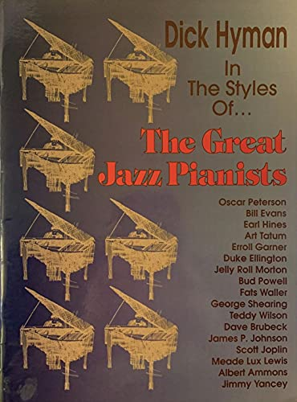

ISMIR 2026, Abu Dhabi

In 1994 Dick Hyman published In the Styles of… The Great Jazz Pianists: fifteen original études, each written in the manner of one master, from Scott Joplin to Bill Evans. Rather than transcribing their solos, Hyman composed new music that carries their signatures — Tatum’s “rapid runs in both hands,” Garner’s “strumming, guitar-like left hand,” Peterson’s “tremolos and glissandi.” That book is the inspiration for this project. Can a model learn to do what Hyman did: not just recognize who is playing, but play in their manner? Tatum, Garner, and Peterson are among the twelve pianists we study — and so is Hyman himself.
We fine-tune Aria, a transformer pretrained on piano MIDI, on solo performances by twelve jazz pianists, adding a gated cross-attention layer that reads a learned embedding for each pianist. To check whether the style comes through, we slide a pianist classifier along the generated music: conditioned continuations are attributed to the intended pianist 70% of the time, against 37% without conditioning. A second classifier trained only on generated music then identifies real recordings with 95% accuracy.
The opening bars of “Ain’t Misbehavin’” are played by one of us (Drew). Everything after the dashed line is generated: twelve takes of the same opening, each conditioned on a different pianist. Switch between them as it plays and you stay at the same moment in the music, hearing how each pianist carries the tune on.
Every take generates the same number of notes, so they end at different times: Erroll Garner packs them into 1:26, Cedar Walton spreads them across 2:45. That difference in density is itself part of a pianist’s signature.
Loading…
A shared prompt pulls every pianist toward the same tune. Here each pianist instead continues a few bars of their own playing. The strip under each take shows what our classifier heard as it slid along the continuation, one cell per window of about 300 notes: gold where it named the intended pianist, mauve where it named someone else. Or switch on the blindfold and guess for yourself.
Blindfold test: who is playing?
The classifier can also point at moments. On a real performance it is near-certain almost everywhere, so instead we ask where it is even more sure than usual: its margin for the true pianist over the runner-up, compared with its own average across that performance. Below, for one held-out recording per pianist, that curve over the whole piece and fifteen seconds from its highest and lowest points.
Everything here is MIDI, rendered in your browser on a sampled piano. The model was trained on automatic transcriptions of commercial recordings, so dynamics and pedalling are approximate, and the rendering is plainer than the records.
The twelve pianists were chosen for separability: they are the twelve of PiJAMA’s thirty whose recordings a pretrained model already tells apart most easily. Within them the model imitates some far better than others — across the paper’s evaluation, continuations were attributed to the intended pianist 96% of the time for Hank Jones and Dick Hyman, but only 29% for Cedar Walton.
The scored takes are selected, not copied. They are samples from the corpus of generated music that the paper’s synthetic-only classifier learned from; for each pianist we show the two highest-scoring of eight candidates. Their prompts come from the training recordings, and the paper checks that the continuations do not copy them: they resemble their closest training performance less than real held-out performances do.
The scores come from a classifier, not from listeners. It is a strong one (98.8% of held-out songs), but it has habits: many of its mistakes on generated music land on Dick Hyman — fitting, perhaps, for a pianist who made a career of playing in everyone else’s style. A listening study is the natural next step.
This is a research tool for studying pianist style, in the spirit of Hyman’s etudes — not a system for imitating anyone at their expense.